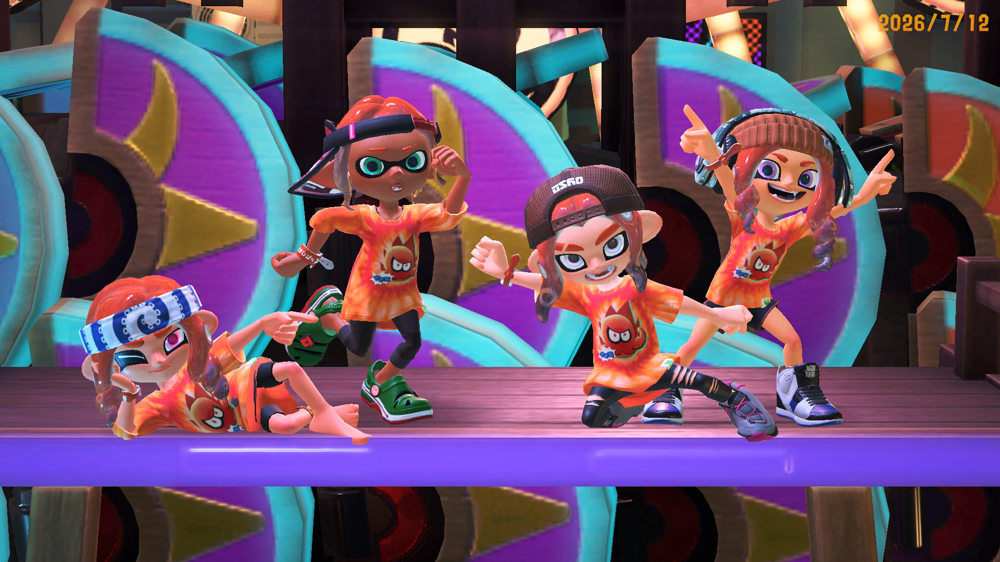
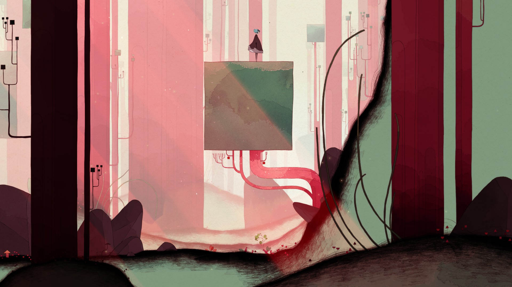
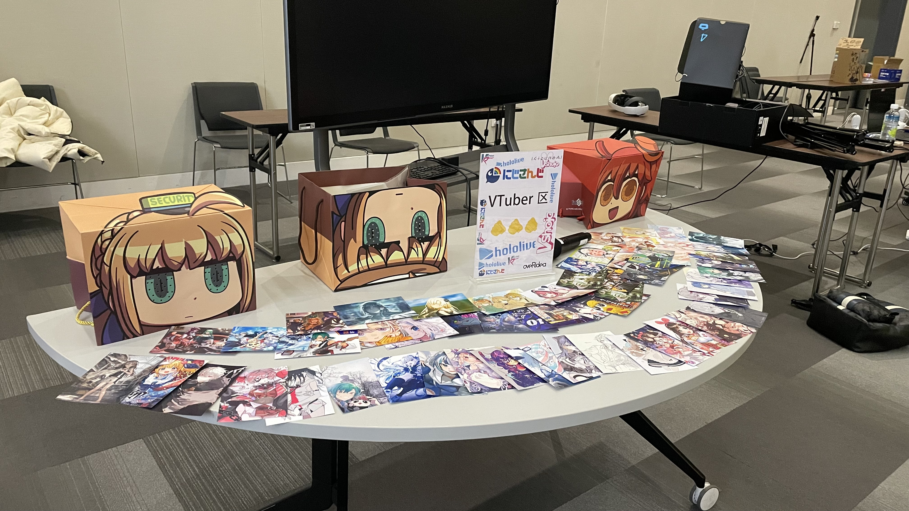

游戏策划 / XR开发 / 创意技术
FAN YU .
我围绕 Unity、Unreal Engine 与 AIGC 工作流，制作可玩的游戏原型、VR交互、关卡拆解和叙事系统。
求职信息
关于
面向游戏岗位，同时具备引擎实作经验的复合型设计者。
当前定位
我目前就读于香港理工大学创新多媒体娱乐硕士项目。作品和经历集中在游戏化学习、XR交互、关卡设计、系统设计，以及制作过程记录文档。
教育背景
- 香港理工大学，创新多媒体娱乐硕士，2025.09 - 2027.05，GPA 3.6/4
- Duke University，数字媒体 / 跨学科研究本科，2021.08 - 2025.05，GPA 3.5/4
- 昆山杜克大学，数字媒体本科，前20%，GPA 3.59/4
经历与奖项
- 香港理工大学文化和艺术科技研究中心 XR开发实习生，2026.07 - 2026.08
- 香港理工大学 AIGC瓷器VR项目志愿者，参与 Unity VR、Meta SDK 与 API 接入
- 入学奖学金、Dean's List、TOEFL 96
精选作品
游戏原型、XR制作与关卡策划研究。
Capstone / Unity / Aseprite
毕业设计 Pixel Nihongo：电子游戏与语言习得的结合
本科毕设单人 demo，从《巴别塔圣歌》和《歧路旅人》中汲取灵感，尝试将 HD-2D 像素视觉、日语动词变式战斗、词汇学习、语音识别发音练习与文化语境整合成可玩的学习体验。
观看演示
2026金海豚GameJam / Unity
更正师
2026金海豚GameJam 21天参赛作品，由俞帆个人完成游戏制作，并与AI协作推进策划推演、文本生产、素材与音乐辅助、代码实现和迭代。玩家扮演AI认知更正师，在倒计时压力下复核人际关系案例；选择会改变系统信任、世界偏差、玩家压力和个体状态，并在终局报告中回放玩家如何训练AI理解人类互动。
ETHICS ARENA
AI × AI
DEBATE
DEBATE
Next.js / TypeScript / Vertex AI
Ethics Arena：AI 辩论场
围绕道德与伦理困境构建的多智能体辩论聊天室原型。系统支持证据搜索、URL/PDF/图片材料导入、基于嵌入的证据排序与论点相似度分析，并提供陪审团、裁判、立场迁移和赛后复盘等辩论模式；模型层可配置 Vertex AI Express Mode 或 OpenRouter。
查看项目仓库
XR / Unity
香港理工大学文化与科技研究中心 AIGC瓷器VR项目
Unity VR 项目协作，主要使用 Meta SDK 制作虚拟键盘输入、虚拟角色、MR手部追踪模型更换与骨骼绑定，并参与 API 接入。
GitHub
UE / OpenXR
PhilosopherVR
硕士阶段毕业设计。负责 UE Blueprint VR 交互逻辑，包括钢琴按钮、检查对错、播放音频、显示文本、手柄震动、奖杯拾取提示和 Dynamic Material Instance 应用。
GitHub
赢了一把
Game Jam / 关卡策划
赢了一把
Game Jam 单人开发概念，10-15分钟第一人称解谜 / 资源管理 / 叙事压力关卡。表层目标是赚够筹码打开出口，真实目标是识别“赢钱诱导”，保留现实资源并找到非赌博出口。

UE / Sequencer
千禧年 UE短片
负责关卡搭建、蓝图设置、Niagara效果制作和 Sequencer 相机移动，练习面向短片流程的 UE 场景制作。
Splatoon 3
Yanyun
Yanyun
关卡拆解
关卡拆解：Splatoon 3 与 燕云十六声
按比例用 UE 白盒复刻 Splatoon 3 的 MakoMart 地图，分析地图热点和玩家动线；同时对《燕云十六声》碧波垂钓关卡做意象模型、核心玩法、交互和体验流程分析。

2D像素 / 战斗关卡
心灵迷宫 Mind Maze
Team NaN 开发的 2D 像素艺术解谜平台游戏，通过隐喻性 Boss 战探索心理主题。我负责两个战斗关卡设计与执行，包括 Boss 形态、攻击方式、素材收集和制作。
GitHub我玩什么游戏
把长期游玩，转化为可以分析与验证的设计语汇。
时长只是起点。我更关心机制、空间、叙事与玩家决策如何共同构成一次完整体验。

01 / CORE
TPS / LEVEL DESIGN
500+小时
Splatoon 3
射击手感之外，Splatoon 将移动、攻击和空间占领统一在墨水机制中。500多个小时里，我开始从首次交战时间、视野、侧翼路线与动态交战热点去阅读地图。
展开设计思考
墨水既是团队得分的载体，也是移动路径、资源限制和战场信息的一部分。我会复盘不同阶段的玩家动线和交战热点，观察高台、狭窄入口、掩体与侧翼路线如何改变武器优势和攻防转换。优秀玩法来自机制、地图、反馈与玩家决策共同形成的循环。
MMO / QUEST DESIGN
600+小时
燕云十六声
开放世界任务的价值，在于让故事与玩家正在探索的空间发生联系。建筑结构、人物行动、物件摆放和环境变化，让玩家通过观察、移动、战斗与奇术亲自发现事件。
展开设计思考
长期游玩也让我注意到自由度与叙事节奏的矛盾：引导过强会削弱探索感，引导不足又可能让玩家错过关键信息。我尝试单人制作仿燕云任务关卡，从任务目标、地图草图、玩家路径与事件触发条件入手，并考虑玩家从不同方向进入、提前取得道具或中途离开的情况。
游戏地图
探索我的游戏经历
按类型筛选，再选择游戏查看对应的经历与设计观察。
Splatoon 3
500+ 小时 · 最高段位 B+ · 鲑鱼跑 传说100
深入体验墨水机制、地图控制、PVP 涂地循环与 PVE 鲑鱼跑，并从关卡设计角度分析地图 POI、玩家路径、交战热点和攻防转换节奏。
从词云选择其他游戏
ACG / OFFLINE
从虚拟世界，到线下表达
Fate、GRIS 与其他 ACG 作品影响着我对角色、视觉叙事和情感体验的理解。这份兴趣也延伸到漫展布展与同人内容的组织和呈现。


技能
技能按实际生产中的使用方式组织。
引擎与原型
Unity, Unreal Engine 5 Blueprint, Meta SDK, OpenXR, Codex-assisted interaction demos
策划与设计
玩法机制、关卡拆解、系统思考、交互流程图、过程文档
代码与数据
Python, C#, Tableau, Excel, Stata, data cleaning and visualization
AI工作流
ComfyUI, Codex, GPT, AIGC workflow testing and documentation
视觉与视频
Adobe Illustrator, Photoshop, Canva, Procreate, DaVinci Resolve, Jianying
语言
Mandarin, English, TOEFL 96
作品入口
更多过程记录、Demo 与拆解文档。
联系
正在寻找游戏策划、关卡策划、系统策划、XR 与互动媒体相关实习机会。
谢谢观看